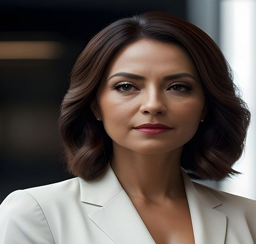
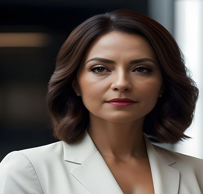
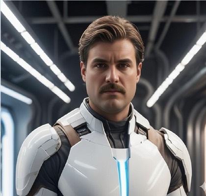
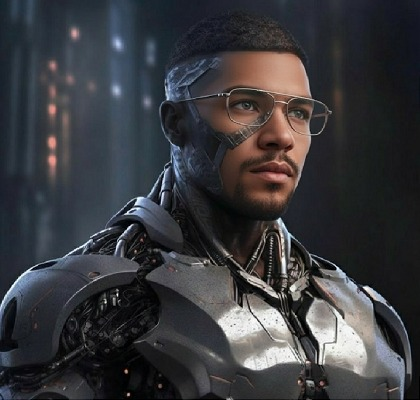
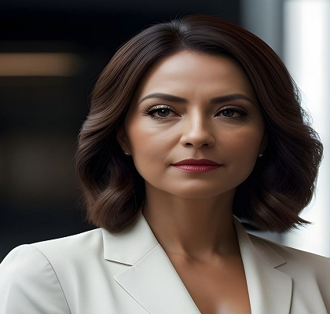

Em 2045 toda a humanidade foi digitalizada em um universo virtual, os corpos mortais agora eram descartados e um corpo imortal era criado, ao menos era oque todos acreditavam.
Com todos tendo sua consciencia levada ao mundo digital, as consciencias que em sua vida mortal tinham talento em invadir, quebrar, e se aproveitar das brechas nos códigos utilizavam seus conhecimentos para conseguir vantagens, controlar pessoas, e soltar vírus digitais que destruiam, corrompiam e traumatizavam os moradores daquele novo mundo, recebendo o nome de Crackers.
Apesar de todo o mal que existia naquele novo mundo, outros usavam seus talentos em prol da segurança pública e se tornaram cyber policiais para proteger todas as pessoas dos crackers.
Em um mundo virtual com nome de Moodle, as pessoas viviam sobre novas regras, adaptadas ao novo estilo de vida que aquele mundo virtual proporcionava, o sistema adotado era de governo presidencialista diferente da terra não existiam outros países, então o presidente de Moodle, realizava a sua função executiva para todas as 10 bilhões de pessoas digitalizadas
Para o cargo executivo, a decisão final fica entre dois candidatos, Yrjo, que tem como principais propostas:
Enquanto isso Santiago, tinha propostas parecidas, porém, acreditava que era necessario primeiro criar as funcionalidades, independente da estrutura, suas principais propostas giravam em torno de:
Enquanto as campanhas eram realizadas, Guilym Sugeria as Forças Digitais que ficassem mais ativo, fazendo com que a cyberpolicia fizesse mais patrulhas por dia para garantir que nenhum Cracker utilizassem suas habilidades para manipular a população.
Quando as coisas pareciam estar caminhando nos trilhos Crackers começaram a se manifestar trazendo uma nova ameaça as Fake News, que confundiam os eleitores sobre cada um dos dois candidatos, causando caos em ambos dos lados e dividindo o povo em dois grupos, fazendo com que as pessoas se perdessem em mentiras.
Com tudo em completo caos, o judiciario junto do legislativo que tinha como representante Lainex teve que tomar uma decisão. Então, Lainex conseguiu aprovar uma nova lei no congresso que proibissem e fizesse o controle das Fake News, assim ajudando a acalmar o povo e trazendo de volta a ordem mais uma vez à população.